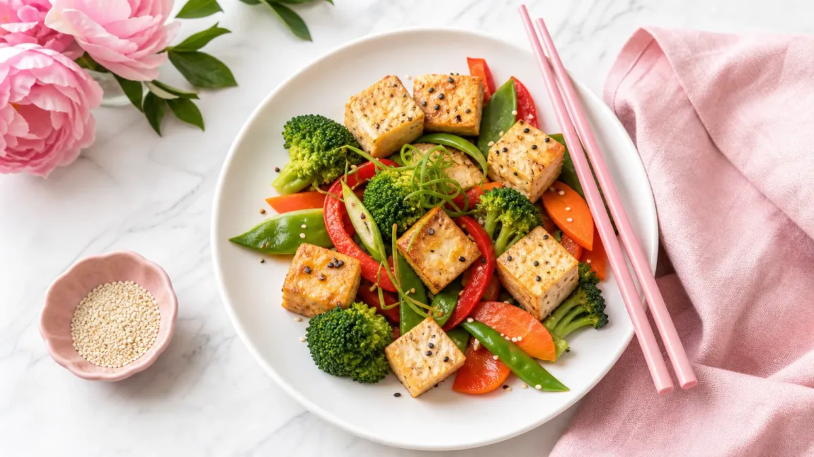

「豆腐ってダイエットに本当に使えるの？」「毎日食べても飽きないか心配…」そんな疑問にお答えします。
豆腐は木綿豆腐100gあたり約72kcal、絹ごし豆腐は約56kcalと低カロリーながら、たんぱく質・食物繊維・イソフラボンを含む食材です。この記事では、朝・昼・夜に使える豆腐ダイエットレシピ15選と、1週間の取り入れ方を具体的に紹介します。
豆腐をダイエットに使うメリット3つ
① 低カロリーでたんぱく質が摂れる
絹ごし豆腐1丁（300g）で約168kcal。同量の鶏もも肉（約600kcal）と比べると大幅にカロリーを抑えられます。たんぱく質は筋肉の維持に欠かせない栄養素で、食事から意識して摂ることが大切です。
② 調理が簡単で時短になる
冷奴なら包丁も火も不要。忙しい朝や疲れた夜でも、5分以内に1品追加できます。
③ アレンジが豊富で飽きにくい
和・洋・中・韓とどんな味付けにも合うため、毎日食べても飽きにくいのが豆腐の強みです。
🍱 豆腐ダイエット 早わかりガイド
カロリー比較 ＆ 活用ポイントを一目でチェック！
🍳 豆腐スクランブルエッグ
🥗 冷奴サラダ
🥘 麻婆豆腐（低糖質）
🥗 豆腐チャンプルー
🥩 豆腐ハンバーグ
🍵 湯豆腐
🍰 豆腐チーズケーキ風
🍦 豆腐アイス風
- ✅1日の目安量：豆腐1/2〜1丁（150〜300g）を食事に分けて取り入れる
- ✅たんぱく質補給のため、夕食に木綿豆腐を選ぶと◎
- ✅塩分過多に注意：タレやめんつゆは小さじ1〜2杯を目安に
- ✅豆腐だけに偏らず、野菜・主食とバランスよく組み合わせる
朝ごはんに使える豆腐レシピ5選
1. 豆腐スクランブルエッグ（約120kcal）
絹ごし豆腐100gと卵1個をフライパンで炒めるだけ。塩・こしょうで味付けし、調理時間は約5分。たんぱく質を朝から手軽に補えます。
2. 豆腐スムージー（約130kcal）
絹ごし豆腐100g＋バナナ1/2本＋無調整豆乳100mlをミキサーで混ぜるだけ。飲みやすく、忙しい朝にぴったりです。
3. 冷奴サラダ（約90kcal）
絹ごし豆腐1/2丁にトマト・きゅうりをのせ、ポン酢小さじ2をかけます。野菜も一緒に摂れて栄養バランスが整います。
4. 豆腐みそ汁（約60kcal）
定番ですが、具材を豆腐＋わかめにすることで食物繊維もプラス。みそは小さじ1.5杯を目安に塩分を調整しましょう。
5. 豆腐トースト（約180kcal）
食パン1枚に水切り豆腐50gをマッシュしてのせ、トースターで3分焼くだけ。チーズ風の食感で満足感があります。
昼ごはんに使える豆腐レシピ5選
6. 豆腐そぼろ丼（約320kcal）
木綿豆腐150gを炒って鶏ひき肉50gと合わせ、しょうゆ・みりん各小さじ1で味付け。ご飯150gの上にのせれば完成。通常のそぼろ丼より約100kcal削減できます。
7. 豆腐チャンプルー（約200kcal）
木綿豆腐100g・ゴーヤ50g・卵1個・かつお節を炒め合わせます。ビタミンCも摂れる栄養バランスの良い一品です。
8. 低糖質麻婆豆腐（約230kcal）
豆腐200g・豚ひき肉30g・豆板醤少量で作るシンプルレシピ。片栗粉の量を通常の半量にすることで糖質を抑えられます。
9. 豆腐と野菜のあんかけ（約160kcal）
絹ごし豆腐1/2丁に、にんじん・しいたけ・小松菜のあんかけをかけます。野菜の旨みが豆腐に染みて美味しく仕上がります。
10. 豆腐入り冷やし中華風（約280kcal）
そうめん80gに豆腐50gをトッピング。麺の量を減らして豆腐でボリュームを補うことで、カロリーを抑えながら満足感を維持できます。
昼食の献立に悩む方は、ダイエットレシピ1週間分の朝昼晩プランも参考にしてみてください。
夕ごはんに使える豆腐レシピ5選
11. 豆腐ハンバーグ（約200kcal）
木綿豆腐100g＋鶏ひき肉100gを混ぜて成形し、フライパンで焼きます。通常のハンバーグより脂質を抑えられ、ふわふわの食感が楽しめます。
12. 豆腐鍋（約180kcal/1人前）
豆腐150g・白菜・えのき・鶏むね肉を昆布だしで煮るだけ。ポン酢で食べると塩分も控えめに。野菜を先に食べると満足感が高まります。
13. 湯豆腐（約120kcal）
最もシンプルな豆腐料理。昆布だしで絹ごし豆腐を温め、薬味（ねぎ・しょうが）とポン酢でいただきます。夜遅い食事にも向いています。
14. 豆腐グラタン（約240kcal）
豆腐100gをマッシュしてホワイトソース代わりに使用。ブロッコリー・エビを加えてオーブンで10分焼くだけ。チーズは少量（10g）にとどめるとカロリーを抑えられます。
15. 豆腐の味噌田楽（約150kcal）
木綿豆腐を1cm厚に切り、みそ・みりん・砂糖少量を混ぜたタレを塗ってトースターで5分。甘辛い味付けでご飯なしでも満足できます。
豆腐と同様にたんぱく質が豊富な食材を使ったレシピは、鶏胸肉の人気ヘルシーレシピ5選もあわせてチェックしてみてください。
1週間の豆腐ダイエット取り入れ方スケジュール
いきなり毎食豆腐にする必要はありません。以下のステップで無理なく始めましょう。
ステップ1（1〜2日目）：夕食に湯豆腐か冷奴を1品追加するだけ。既存の食事に足すイメージで始めます。
ステップ2（3〜4日目）：昼食のご飯を通常量の2/3にして、豆腐そぼろをトッピング。主食を減らした分を豆腐で補います。
ステップ3（5〜7日目）：朝・昼・夜のうち2食に豆腐を取り入れる。アレンジを変えながら飽きない工夫をします。
豆腐ダイエットを続けるための3つのコツ
水切りで食感を変える
木綿豆腐をキッチンペーパーで包み、重しをのせて30分水切りするとしっかりした食感になり、炒め物やハンバーグに使いやすくなります。
冷凍豆腐を活用する
豆腐を冷凍すると水分が抜けて肉のような食感に変化します。解凍後に炒めると食べ応えが増し、満足感が高まります。
調味料に気をつける
豆腐自体は低カロリーでも、ごま油や甘いタレを多用するとカロリーが増えます。ポン酢・だし醤油・薬味を上手に使って味のバリエーションを楽しみましょう。
Q. 豆腐を毎日食べても大丈夫ですか？
一般的な食事量（1日150〜300g程度）であれば、毎日食べても問題ないとされています。ただし、豆腐だけに偏らず、野菜・炭水化物・その他のたんぱく源もバランスよく組み合わせることが大切です。特定の疾患がある方は医師にご相談ください。
Q. 木綿豆腐と絹ごし豆腐、ダイエットにはどちらが向いていますか？
目的によって使い分けるのがおすすめです。たんぱく質を多く摂りたい場合は木綿豆腐（100gあたり約7g）、カロリーをより抑えたい場合は絹ごし豆腐（100gあたり約56kcal）が向いています。食感の好みや料理の種類に合わせて選びましょう。
Q. 豆腐ダイエットはいつから効果が出始めますか？
食事全体のカロリーバランスや生活習慣によって個人差があります。豆腐を取り入れることで食事のカロリーを抑えやすくなりますが、豆腐単体に「何日で効果が出る」という保証はありません。2〜4週間を目安に食事全体を見直しながら継続することが大切です。
食事管理の方法をもっと幅広く知りたい方は、食事管理の記事一覧もぜひご覧ください。
まとめ：豆腐を上手に使って無理なく食事管理を
豆腐ダイエットレシピのポイントをまとめます。
- 絹ごし豆腐100gは約56kcal、木綿豆腐は約72kcalと低カロリー
- 朝・昼・夜・間食と幅広く使えるアレンジ力が魅力
- 1週間は3ステップで無理なく取り入れる
- 水切り・冷凍など調理の工夫で飽きを防ぐ
- 調味料の使いすぎに注意し、食事全体のバランスを意識する
豆腐は手軽に購入でき、調理時間も短い優秀な食材です。今日の夕食から1品追加するところから始めてみましょう。